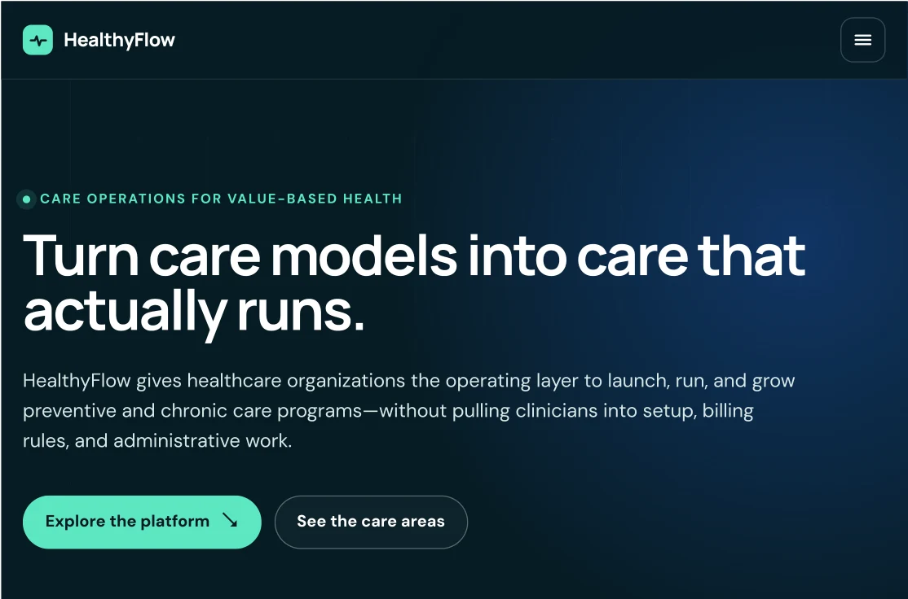

Review the operating requirements
Read the documented program lifecycle, intended users, recurring tasks, information needs, and integration boundaries. Separate launch activities from daily operations.
HealthyFlow · Product strategy and workflow design
A care program has to work for the people running it. HealthyFlow organizes readiness, enrollment, recurring work, documentation, and payment visibility into a connected product concept.
Early-stage product definition · United States · 2026
The product problem
HealthyFlow is an early-stage software concept for organizations delivering preventive and ongoing care. The planning materials describe a recurring problem: an organization must identify eligible patients, obtain consent, enroll them, coordinate work, document what happened, and connect that record to billing and reporting.
Those activities can sit across EHRs, portals, spreadsheets, and different team members. A screen that looks clear in isolation may still leave the next person without the information or ownership needed to continue the work. The design question was how to make the full program understandable, with a visible next step and a shared record of its status.
The initial product plan focuses on chronic care management for small and midsize physician groups. Additional preventive, remote, and value-based care programs form an expansion roadmap.
Method
This case synthesizes the documented product plan and presentation. The diagrams below are portfolio explanations of that material, not observations from a participant study.
Read the documented program lifecycle, intended users, recurring tasks, information needs, and integration boundaries. Separate launch activities from daily operations.
The plan reviews program-specific software, remote and longitudinal care platforms, practice tools, and population health infrastructure. That comparison frames what belongs in the product and what should remain in existing systems.
Connect enrollment, recurring work, evidence, claim readiness, and payment status. Make the owner, required information, and exception at each handoff explicit.
Use the proposed workflow to identify assumptions for buyer interviews, staff walkthroughs, prototype testing, and a later pilot. The plan calls for a baseline before assessing improvement.
Information architecture
The product suite follows the program lifecycle. An organization can identify its current stage without first understanding the entire platform.
Review workflows, systems, data, gaps, and the launch case.
Decision: Are we ready?Configure roles, enrollment, templates, data import, and training.
Decision: What must be set up?Coordinate enrollment, tasks, evidence, and exceptions.
Decision: What needs attention?Track outreach, referrals, conversion, and capacity.
Decision: Where can we expand?Connect operating, financial, and program reporting.
Decision: What should change?Source: the five modules documented in the HealthyFlow product plan and presentation. These stages describe the product concept, not measured user behavior.

Stakeholder task map
The product plan names operations, clinical support, revenue cycle, compliance, and leadership as intended users. This task map translates those responsibilities into design questions.
Program and operations teams
Who is ready for enrollment? Which task is waiting? Who owns the next action?
Design focusA work queue that makes status, ownership, and missing information visible.
Clinical support teams
What recurring activity is due? Which supporting information must be captured?
Design focusTask context and evidence fields connected to the program record.
Revenue cycle and compliance
Is the record complete enough for review? Where is the claim or payment status unclear?
Design focusTraceable evidence, exceptions, and a clear separation between readiness and payment.
Leadership
Where is work accumulating? Does the team have capacity to grow the program?
Design focusReporting tied to the same enrollment, task, evidence, and payment stages.
Operating workflow
The proposed flow follows the initial product plan from patient identification to payment visibility. Each stage needs a status, an owner, and enough information for the next stage.
Eligibility and referral context
Consent and enrollment status
Recurring tasks and ownership
Required service evidence
Claim readiness and exceptions
Payment status and reporting
Example handoff · Proposed design
A completed task and a complete record are different states. The next person needs to see which evidence is available and which requirement still needs attention.
Workflow synthesis from the product plan. It is an operating design example, not billing advice or a tested production interface.
Product decisions
The plan narrows the initial release to chronic care management, a defined data import, and one selected EHR or billing-system connection. That gives the team a concrete workflow to evaluate before adding more programs and integrations.
Enrollment, task status, documentation, claim readiness, and payment visibility are treated as connected parts of the operating record. Analytics can then describe a process the team recognizes, rather than an isolated set of totals.
Program and payer requirements can change. The concept uses a version-controlled rules layer so the team can reuse operating functions while adapting requirements. This is an architecture direction in the plan, not a claim of completed regulatory compliance.
Next validation
The materials define a product direction. The next research step is to check whether the intended users recognize the workflow, understand the states, and can complete the most important tasks.
Measures are proposed in the product plan. No before-and-after results are reported here.
What the work establishes
The documented output is a five-module product suite, an initial program scope, intended team roles, an operating process, and measures for a later pilot. The case connects those elements into a visible workflow so the design can be reviewed and challenged before expansion.
This is an early-stage HealthyFlow product definition example, not a completed client usability engagement. The source materials do not document participant recruitment, usability scores, validated reductions in staff effort, or measured clinical outcomes.
Source basis: HealthyFlow product and business plan, revised September 2026, and the September 2026 product presentation. Diagrams and task maps on this page are explanatory synthesis of those materials. Financial projections and private company documents are excluded.
Get a quote
Share the product, intended users, and decision. We can define the research needed to understand the task and prioritize the next change.